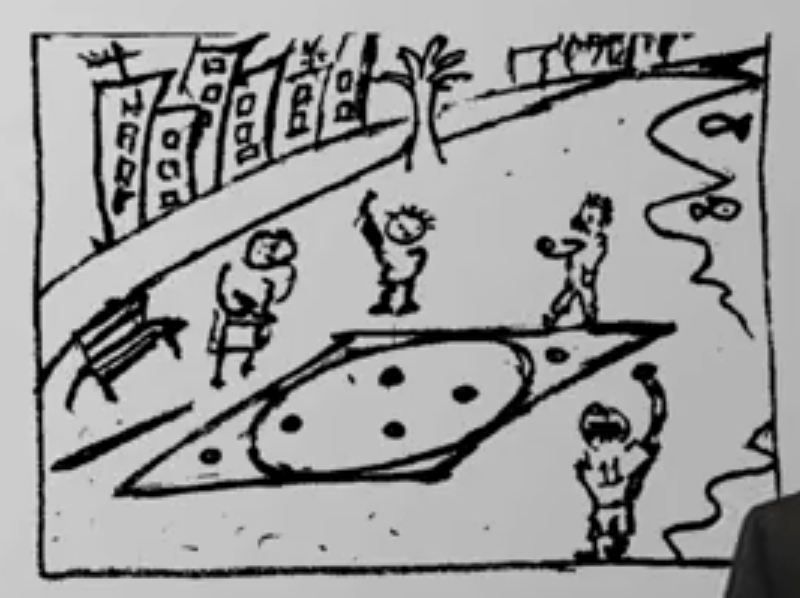

<h1> <a href="https://www.coursera.org/learn/statistical-mechanics/lecture/rWoI7/lecture-1-introduction-to-monte-carlo-algorithms" target="_blank">
   Prelude - 小沙滩 Direct Sampling ：Children on the beach</a> </h1>


   <div class="row">
     <div class="col-md-4">

       <strong class="attention" style="font-size:1.5em;">
   Children play pebble game on MonteCarlo beach
    </strong>
       <p style="margin-top:-0.2em;">
         游戏是这样的：在海滩上，画一个方块；在方块中，画个最大的圆；然后，向这个方块中，随机地扔鹅卵石；

       </p>
     </div>
     <div class="col-md-8">

       
     </div>
   </div>
